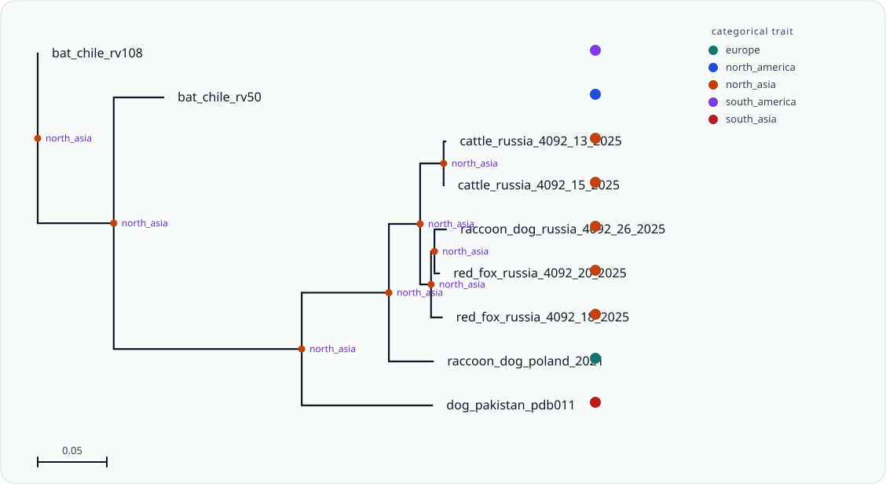

Bijux Rabies Host and Geography Workflow
Complete end-to-end review for one real rabies nucleoprotein panel. The workflow starts from raw sequences plus combined host and geography metadata, validates the FASTA surface, aligns and trims the panel, infers a bootstrap-supported maximum-likelihood tree, roots that tree on one explicit outgroup, summarizes bootstrap topology uncertainty, extracts clades, reconstructs host and geographic histories, and fits one comparative model over a derived geographic trait.
Scientific Question
Do the host-associated rabies lineages in this compact panel occupy one distinct geographic regime while retaining one coherent phylogenetic signal?
Working answer: `host_group[canid]` shows a positive association and is nominally supported. The comparative layer selects brownian as the better continuous-trait surface, but the residual diagnostics remain cautionary and the panel is intentionally small.
- FASTA validation resolved the raw sequence type as dna.
- Bootstrap support spans 84-100 across the final rooted tree.
- Host reconstruction inferred 2 host-switch branches, with 0 certain and 2 uncertain changes.
- Geographic reconstruction inferred 4 migration events across 4 changed branches.
- Bootstrap replicate review retained 1000 trees across 19 rooted topologies.
- The rooted ML tree versus bootstrap consensus comparison returned rooted RF distance 1.
- The clade table contains 17 node rows and the comparative tree required 1 explicit branch-length repair(s).
- Configured workflow budgets covered the bootstrap review without tree-count failure or peak-memory warning.
Sequence-to-Tree Outputs
- input validation: input-validation.tsv
- alignment quality: alignment-quality.tsv
- alignment sequence ranking: alignment-sequence-ranking.tsv
- alignment: rabies-cross-host-geography-panel.aln
- trimmed alignment: rabies-cross-host-geography-panel.trimmed.aln
- rooted tree: rabies-cross-host-geography-panel.rooted.tree
- support table: rabies-cross-host-geography-panel.support.tsv
- workflow summary: workflow-summary.tsv
- resource observations: resource-observations.tsv
| node | descendant_taxa | support | support_fraction |
|---|---|---|---|
| cattle_russia_4092_13_2025|cattle_russia_4092_15_2025|dog_pakistan_pdb011|raccoon_dog_poland_2021|raccoon_dog_russia_4092_26_2025|red_fox_russia_4092_18_2025|red_fox_russia_4092_20_2025 | cattle_russia_4092_13_2025, cattle_russia_4092_15_2025, dog_pakistan_pdb011, raccoon_dog_poland_2021, raccoon_dog_russia_4092_26_2025, red_fox_russia_4092_18_2025, red_fox_russia_4092_20_2025 | 100 | 1 |
| cattle_russia_4092_13_2025|cattle_russia_4092_15_2025|raccoon_dog_poland_2021|raccoon_dog_russia_4092_26_2025|red_fox_russia_4092_18_2025|red_fox_russia_4092_20_2025 | cattle_russia_4092_13_2025, cattle_russia_4092_15_2025, raccoon_dog_poland_2021, raccoon_dog_russia_4092_26_2025, red_fox_russia_4092_18_2025, red_fox_russia_4092_20_2025 | 100 | 1 |
| cattle_russia_4092_13_2025|cattle_russia_4092_15_2025|raccoon_dog_russia_4092_26_2025|red_fox_russia_4092_18_2025|red_fox_russia_4092_20_2025 | cattle_russia_4092_13_2025, cattle_russia_4092_15_2025, raccoon_dog_russia_4092_26_2025, red_fox_russia_4092_18_2025, red_fox_russia_4092_20_2025 | 99 | 0.99 |
| raccoon_dog_russia_4092_26_2025|red_fox_russia_4092_18_2025|red_fox_russia_4092_20_2025 | raccoon_dog_russia_4092_26_2025, red_fox_russia_4092_18_2025, red_fox_russia_4092_20_2025 | 92 | 0.92 |
| raccoon_dog_russia_4092_26_2025|red_fox_russia_4092_20_2025 | raccoon_dog_russia_4092_26_2025, red_fox_russia_4092_20_2025 | 84 | 0.84 |
| cattle_russia_4092_13_2025|cattle_russia_4092_15_2025 | cattle_russia_4092_13_2025, cattle_russia_4092_15_2025 | 100 | 1 |
Bootstrap and Clade Review
- bootstrap tree count: 1000
- rooted topology count: 19
- unstable branch count: 4
- clade row count: 17
- see bootstrap-review/ for consensus, clade frequencies, instability, distances, topology clusters, and rooted-tree comparison
| tree_count | rooted_topology_count | dominant_topology_frequency | effective_topology_count | unstable_branch_count |
|---|---|---|---|---|
| 1000 | 19 | 0.796 | 2.47465890345 | 4 |
Host Switching
- workflow trait: host_group
- root host confidence: 1
- host-switch rows: 2
- see host-switch-summary.tsv, host-state-nodes.tsv, host-switch-branches.tsv, and host-switch-counts.tsv
| transition | certain_switch_count | uncertain_switch_count | total_switch_count |
|---|---|---|---|
| bat->canid | 0 | 1 | 1 |
| canid->livestock | 0 | 1 | 1 |
Comparative Layer
- formula: region_longitude ~ host_group
- selected trait model: brownian
- PGLS lambda: 1
- PGLS r-squared: 0.833944827574
- see comparative/ for coefficients, model comparison, diagnostics, signal summary, and interpretation tables
| topic | claim | evidence |
|---|---|---|
| formula | comparative regression was fit as `region_longitude ~ host_group` | analysis_taxa=9; predictors=1 |
| phylogenetic-signal | the response trait retains high phylogenetic structure | blombergs_k=2.441010; pagels_lambda=1.000000 |
| model-comparison | brownian is the preferred continuous trait model on AICc | aicc_delta=4.934486; selected_from=2 models |
| coefficient | `host_group[canid]` shows a positive association and is nominally supported | estimate=144.746259; p_value=0.033808; 95%_ci=[15.407057, 274.085460] |
| coefficient | `host_group[livestock]` shows a positive association and is nominally supported | estimate=154.578389; p_value=0.031665; 95%_ci=[18.907086, 290.249693] |
Biogeography
The bundle includes the detailed biogeography package at biogeography/biogeography-report.html together with the ancestral-region tree SVG and the self-contained geographic map.
Ancestral-Region Tree

Geographic Map
| branch_id | source_region | target_region | support | midpoint_depth |
|---|---|---|---|---|
| bat_chile_rv108 | north_asia | south_america | 0.441176468813 | 0 |
| bat_chile_rv50 | north_asia | north_america | 0.544642856174 | 0.0730227384 |
| dog_pakistan_pdb011 | north_asia | south_asia | 0.608028820994 | 0.23829727355 |
| raccoon_dog_poland_2021 | north_asia | europe | 0.646984011474 | 0.27017854725 |
Scientific Findings Ledger
| finding_id | question | claim | evidence | caution | source_artifact |
|---|---|---|---|---|---|
| root_host_state | What host state anchors the rooted rabies panel? | The rooted tree places the ancestral host state in bat. | root host confidence 1 with outgroup bat_chile_rv108 | The panel is compact and grouped by broad host classes rather than species-level host states. | rabies-cross-host-geography-panel.rooting.tsv |
| root_region_state | What geographic regime anchors the rooted rabies panel? | The rooted tree places the ancestral region in north_asia. | root region probability 0.555555553778 across 4 changed branches | Grouped macroregions simplify the raw locality labels so the result should be treated as regional rather than site-level history. | biogeography/summary.tsv |
| host_switching | How much host-switching signal appears in the rooted tree? | The host reconstruction inferred 2 host-switch branch changes. | certain changes 0; uncertain changes 2 | Branch-wise host changes depend on the grouped host coding and should not be over-read as one exhaustive host-jump catalogue. | host-switch-summary.tsv |
| bootstrap_consensus | Does the bootstrap consensus preserve the rooted ML conclusion? | The bootstrap consensus differs from the rooted ML topology after support-driven summarization. | rooted RF distance 1; high-support conflicts 0 | Consensus trees can collapse low-support branches, so exact rooted agreement is stricter than shared major clades. | bootstrap-review/rooted-tree-vs-bootstrap-consensus.summary.tsv |
| comparative_longitude | Do host-associated rabies lineages occupy one distinct longitudinal regime in this panel? | `host_group[canid]` shows a positive association and is nominally supported | selected model brownian; PGLS lambda 1; r-squared 0.833944827574 | The comparative claim is associational, uses only nine taxa, and retains residual-diagnostic cautions. | comparative/interpretation-table.tsv |
| migration_events | How much regional movement is implied by the geographic reconstruction? | The biogeography layer inferred 4 migration events across the rooted tree. | strongly supported migration events 0 | Event counts summarize transitions over grouped regions and do not replace one dated dispersal analysis. | biogeography/event-table.tsv |
Key Files
- workflow-summary.tsv
- resource-observations.tsv
- workflow-config-audit.tsv
- clade-table.tsv
- bootstrap-review/bootstrap-review.summary.tsv
- bootstrap-review/rooted-tree-vs-bootstrap-consensus.summary.tsv
- comparative/comparative-report.html
- comparative/interpretation-table.tsv
- scientific-findings.tsv
- host-switch-summary.tsv
- biogeography/event-table.tsv
- rabies-cross-host-geography.manifest.json